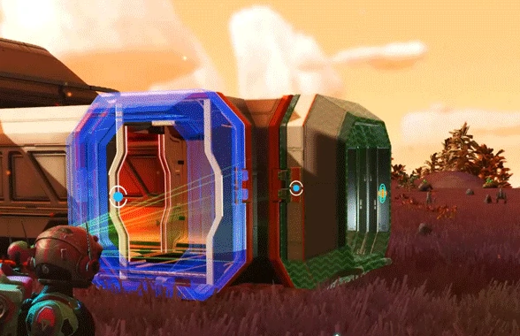
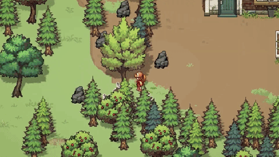

Jogos de sobrevivência e cooperativos
Os jogos de sobrevivência são considerados
uma extensão dos gêneros de ação e
aventura, onde o personagem geralmente
está encalhado ou esperados dos outros e
deve trabalhar sozinho para sobreviver
e completar um objetivo ao mesmo tempo
em que estimulam a exploração de um
mundo aberto.

No início de um típico jogo de sobrevivência,
o jogador geralmente é colocado sozinho no
mundo do jogo com poucos recursos. Em alguns
títulos, o mundo é gerado aleatoriamente para
que os jogadores busquem ativamente alimentos
e armas. O personagem do jogador normalmente
terá uma barra de saúde e sofrera danos por queda,
fome, afogamento, contato com fogo, líquidos
mortais ou sendo atacado por monstros que abitam
o mundo e até mesmo outros jogadores.
Os jogos de sobrevivência contam com muitas mecânicas de
farms, crafts, construções, missões e desafios. Que são
nesessarias para sobreviver e evoluir no jogo.
Com o modo cooperativo outros jogadores podem
ingresar no ambiente do jogo e ajudar nos desafios
das missões, onde muitos jogos e fases possam contar
com a ajuda de outro jogador para conseguir concluir
os desafios, além de ser mais divertido jogar com amigos.
Esse tipo de jogo visa estabelecer relações de confiança
e parceria em um clima descontraído, proporcionando o
fortalecimento do grupo e a empatia entre as pessoas.

Em sua prática, os jogos cooperativos não possuem eliminações,
exclusões, vencedores e perdedores. Em geral, o modo como a
tarefa se desenvolve e a interação entre os participantes
tornam-se o ponto central.
O desafio consiste na superação de medos, inseguranças e da
dificuldade de agir e pensar coletivamente.
Os jogos cooperativos cumprem um importante papel de didático
e servem como uma metáfora da vida, onde muitas vezes é necessário
unir forças para alcançar uma determinada meta.

Fontes:
Redalyc
Toda Materia
The Survivalists
The Survivalists é um jogo de aventura cooperativo do Team 17 ambientado no universo The Escapists.
Ao acordar na praia de uma ilha misteriosa, enfrente as ameaças da ilha! Explore, cace, construa,
crie e até treine macacos com até quatro
amigos em uma tentativa desesperada de sobreviver.
A ilha está viva! Seu novo lar mudará com os ciclos dia/noite conforme você explora e descobre seus
segredos. Cace (ou seja caçado por!) Animais para se alimentar e uma série de inimigos míticos,
que não ficam necessariamente felizes em vê-lo. Receba missões de um Estranho Misterioso ou
encontre-as na praia. Prepare-se para caminhar em um deserto gerado processualmente, com uma
variedade de biomas, para uma aventura única para cada jogador.
Disponível no Steam, PS4, Xbox e Nintendo Switch!

Fontes:
Wiki do Jogo
Site Oficial
The Survivalists - Steam
Rust
Um jogo de sobrevivência onde seu universo não tem história, com isso seus desenvolvedores podem
alterar e adicionar itens ao universo do Rust.
Rust é um jogo voltado para sobrevivência com cooperativo e pvp, repleto de crafts e farms. Onde você pode escolher
seu estilo de jogo, pvp, pve ou um misto de pvp e pve. Se você escolher sobreviver contrar outros players e partir para
o pvp poderar cauterar monumentos e missões sendo feitas por outros jogadores, colocando em pratica habilidades de mira, estratégia de combate e posicionamento
por outros jogadores e até mesmo destruir as bases deles ou você pode optar por um modo mais passivo e fazer as construções,
crafts, monumentos e farms evitando confrontos com outros jogadores.
O jogo conta com um sistema grande de construção de bases, onde é posivel construir sua base e fortificar em 3 tiers (niveis),
adicionando energia elétrica e hidraulica, com um sistema de cultivo avançado que você pode trabalhar com genéticas de plantas
os crafts também são divididos em três tiers, que possuem roupas, equipamentos, ferramentas e armas.
O ambiente do Rust é dividido em três biomas sendo deserto, floresta e a tundra, sua fauna é composta por galinhas, javalis,
lobos, ursos, tubarões sem contar nos divesos tipos de peixes. Os animais no jogo também podem ser caçados e
possuem craftis com seus itens, como combustiveis, roupas, ferramentas e armas.
Existem varios monumentos no mapa com puzzles, bots, loots e alguns eventos que ocorrem no servidor.
Disponível para PC no Steam, PS4 e Xbox.

Fontes:
Wiki do Jogo
Site Oficial
Rust - Steam
DayZ
DayZ um jogo de sobrevivência pós apocalitico com zumbis. Onde você vive na pele de um dos pucos sobreviventes
lutando para sobreviver contra fome, radiação, clima, animais selvagens, mortos vivos e outros sobreviventes.
Tendo uma unica vida, todo seu progresso acaba quando você morre tendo que começar novamente na vida de outro sobrevivente.
Não há marcadores de mapa, missões diárias ou placares para ajudá-lo a criar sua história.
Existe apenas Chernarus – 230 quilômetros quadrados de país pós-soviético que foi atingido
por um vírus desconhecido, que transformou a maioria de sua população em infectados furiosos.
Para sobreviver ao colapso da civilização o máximo que puder. Tenha em mente que a morte
é permanente no implacável Chernarus. Tudo o que você terá quando começar de novo são
as lembranças do seu erro final.
Até 60 jogadores estão lutando para sobreviver por todos os meios necessários a qualquer
momento. Faça amigos, mate à primeira vista, construa uma base ou arrisque ser traído por
causa de uma lata de feijões saborosos. Use o VOIP para interagir com outros jogadores da
maneira que achar melhor. Cada encontro é significativo quando sua vida está sempre em jogo.
Seja cauteloso. Fique alerta. Não acredite em ninguém.
Hoje no DayZ conta com mapas como Chernarus, Livonia, Namalsk inumeros mods que podem alterrar a forma do jogo
servidores modificados, vanilla e oficiais.
Disponível para PC no Steam, PS4 e Xbox.

Fontes:
Wiki do Jogo
Site Oficial
Dayz - Steam
The Florest
Como o único sobrevivente de um acidente de avião de passageiros, você se encontra em uma floresta
misteriosa lutando para se manter vivo contra uma sociedade de mutantes canibais.
Construa, explore, sobreviva neste aterrorizante simulador de terror de sobrevivência em primeira
pessoa.
Entre em um mundo vivo e vibrante, onde todas as árvores e plantas podem ser cortadas.
Abaixo do solo, explore uma vasta rede de cavernas e lagos subterrâneos.
Explore e construa durante o dia. Defenda sua base à noite. Crie armas e ferramentas.
Desça o bunker durante a noite ou leve a luta diretamente para o inimigo.
Defenda-se contra um clã de inimigos mutantes genéticos que possuem crenças,
famílias, moral e que parecem quase humanos.
Disponível para PC e PS4.

Fontes:
Wiki do Jogo
Site Oficial
The Florest - Steam